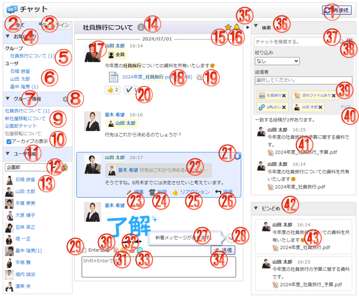

メッセージの送受信を行うことが出来ます。

機能説明
再接続ボタンチャットの再接続を行います。 |
全てタブお気に入りチャット、チャットグループ、ユーザチャットを表示します。 |
|---|---|
タイムラインタブチャットの履歴を一覧で表示します。 |
お気に入り欄お気に入りに設定したチャットグループ/ユーザチャットを表示します。 |
お気に入りチャットグループ中央ペインに表示するチャットグループを選択します。 |
お気に入りユーザチャット中央ペインに表示するユーザチャットを選択します。 |
グループ情報欄所属しているチャットグループ一覧を表示します。 |
グループ管理アイコンチャットグループの追加、編集、削除を行います。チャットグループの作成が制限されている、かつチャットグループの編集権限を一つももっていない場合、アイコンは表示されません。 |
チャットグループ中央ペインに表示するチャットグループを選択します。 |
アーカイブの表示チェックボックスアーカイブ状態のチャットグループの表示/非表示を切り替えます。 |
ユーザ情報欄選択したグループに所属するユーザ一覧を表示します。 |
グループコンボ・ボタングループを選択します。グループボタンをクリックすることで、グループ選択画面が表示されます。 |
ユーザチャット中央ペインに表示するユーザチャットを選択します。 |
インフォメーションアイコンチャットグループの場合はグループ情報、ユーザ間チャットの場合はユーザ情報を表示します。 |
お気に入りアイコンチャットグループ、ユーザ間チャットをお気に入りに登録/削除します。 |
通知アイコン通知をオン/オフします。 |
ユーザ名クリックすることで、メンション先に設定できます。 |
添付ファイル名クリックすることで、添付ファイルをダウンロードします。 |
プレビューアイコン添付ファイルを別ウィンドウでプレビュー表示します。 |
リアクションボタンメッセージに対してリアクションを行います。 |
ピンどめアイコンメッセージをピンどめ/ピンどめを解除します。 |
返信元メッセージクリックすることで、返信元メッセージにジャンプします。 |
編集メッセージを編集します。メッセージをホバーした際に表示されます。 |
削除メッセージを削除します。メッセージをホバーした際に表示されます。 |
リアクションメッセージにリアクションします。メッセージをホバーした際に表示されます。 |
返信メッセージに返信します。メッセージをホバーした際に表示されます。 |
新着メッセージ通知表示中のチャットに新着メッセージがあった場合に表示されます。 |
最新を表示ボタンチャット内の既読済みの最新メッセージを表示していない場合に表示されます。 |
Enter送信チェックボックス入力したメッセージをEnterキーにより送信するか、Shift+Enterキーにより送信するかを設定します。 |
添付アイコンクリックすることで、フォルダウィンドウが開きます。 |
絵文字アイコンクリックすることで、絵文字選択パレットが表示されます。 |
スタンプアイコンクリックすることで、スタンプ選択パレットが表示されます。 |
メンションアイコンクリックすることで、メンション先選択パレットが表示されます。 |
送信ボタンメッセージを送信します。 |
右ペイン開閉ボタン右ペイン（検索欄およびピンどめ欄）の表示/非表示を切り替えます。 |
検索欄クリックすることで、検索欄の表示/非表示を切り替えます。 |
検索ボタン入力したキーワードでメッセージを検索します。 |
詳細検索ボタン詳細検索欄の表示/非表示を切り替えます。 |
検索条件クリックすることで、検索条件を削除します。 |
クリアボタン全ての検索条件を削除します。 |
検索結果メッセージクリックすることで、メッセージにジャンプします。 |
ピンどめ欄ピンどめ欄の表示/非表示を切り替えます。 |
ピンどめメッセージクリックすることで、メッセージにジャンプします。 |
表示・入力項目説明
メッセージ
投稿されたメッセージを表示します。検索にヒットした場合、ヒットした検索キーワードおよび送信者名がハイライト表示されます。
メッセージ入力欄
メッセージを入力します。3000文字以上のメッセージを入力して送信すると、3000字毎にメッセージが分割されて送信されます。
チャット検索キーワード入力欄
検索キーワードを入力します。スペース区切りで最大10個のキーワードを入力できます。1キーワードは50文字まで入力できます。
チャット絞り込み選択コンボ
絞り込み条件を「添付ファイルあり/なし」「URLあり/なし」から選択します。